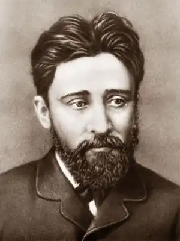
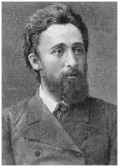

Гаршин Всеволод
Народився 2 (14) лютого 1855 в маєтку Приємна Долина Бахмутського повіту Катеринославської губ. в сім'ї дворян, ведуть свій родовід від золотоординського мурзи гірше. Батько був офіцером, брав участь у Кримській війні 1853-1856. Мати, дочка морського офіцера, брала участь в революційно-демократичному русі 1860-х років.
П'ятирічною дитиною Гаршин пережив сімейну драму, що вплинула на характер майбутнього письменника. Мати закохалася в вихователя старших дітей П.В.Завадского, організатора таємного політичного товариства, і кинула сім'ю. Батько поскаржився в поліцію, після чого Завадського заарештували і заслали до Петрозаводська за політичним звинуваченням. Мати переїхала до Петербурга, щоб відвідувати засланця. До 1864 Гаршин жив з батьком в маєтку поблизу м Старобільська Харківської губ., Потім мати забрала його в Петербург і віддала в гімназію. У 1874 Гаршин надійшов в петербурзький Гірський інститут. Через два роки відбувся його літературний дебют. В основу його першого сатиричного нарису Справжня історія енського земського зібрання (1876) лягли спогади про провінційного життя. У студентські роки Гаршин виступав у пресі зі статтями про художників-передвижників. У день оголошення Росією війни Туреччині, 12 квітня 1877, Гаршин добровольцем вступив в діючу армію. У серпні був поранений в бою у болгарського селища Аясларе. Особисті враження послужили матеріалом для першого оповідання про війну Чотири дні (1877), який Гаршин написав в госпіталі. Після його публікації в жовтневому номері журналу "Вітчизняні записки" ім'я Гаршина стало відомо всій Росії. Отримавши річний відпустку через поранення, Гаршин повернувся до Петербурга, де його тепло прийняли письменники кола "Вітчизняних записок" — М.Е.Салтиков-Щедрін, Г. І. Успенський та ін. У 1878 Гаршин був проведений в офіцери, за станом здоров'я вийшов у відставку і продовжив навчання як вільний слухач Петербурзького університету. Війна наклала глибокий відбиток на сприйнятливу психіку письменника і його творчість. Прості в фабульному і композиційному відношенні розповіді Гаршина вражали читачів граничної оголеністю почуттів героя. Розповідь від першої особи, з використанням щоденникових записів, увагу до найболючішим душевних переживань створювало ефект абсолютної тотожності автора і героя. У літературній критиці тих років часто зустрічалася фраза: "Гаршин пише кров'ю". Письменник з'єднував крайності прояви людських почуттів: героїчний, жертовний порив і усвідомлення мерзотності війни (Чотири дні); почуття обов'язку, спроби ухилення від нього і усвідомлення неможливості цього (Трус, 1879). Безпорадність людини перед стихією зла, підкреслена трагічними фіналами, ставала головною темою не тільки військових, а й більш пізніх оповідань Гаршина. Наприклад, розповідь Подія (1878) — це вулична сценка, в якій письменник показує лицемірство суспільства і дикість натовпу в засудженні повії. Навіть зображуючи людей мистецтва, художників, Гаршин не знаходив дозволу своїм болісним душевним пошуків. Розповідь Художники (1879) проникнуть песимістичними роздумами про непотрібність справжнього мистецтва. Його герой, талановитий художник Рябінін, кидає живопис і їде в село, щоб навчати селянських дітей. В оповіданні Attalea princeps (1880) Гаршин в символічній формі висловив своє світовідчуття. Волелюбна пальма в прагненні вирватися зі скляної оранжереї пробиває дах і гине. Романтично ставлячись до дійсності, Гаршин намагався розірвати зачароване коло життєвих питань, але болюча психіка і складний характер повертали письменника в стан відчаю і безвиході. Цей стан ускладнювався подіями, що відбувалися в Росії. У лютому 1880 революціонер-терорист І.О.Млодецкій вчинив замах на главу Верховної розпорядчої комісії графа М.Т.Лорис-Меликова. Гаршин як відомий письменник домігся у графа аудієнції, щоб просити про помилування злочинця в ім'я милосердя і громадянського миру. Письменник переконував високого сановника в тому, що страта терориста тільки подовжить ланцюжок непотрібних смертей в боротьбі уряду і революціонерів. Після страти Млодецкого у Гаршина загострився маніакально-депресивний психоз. Не допомогло подорож по Тульській і Орловській губерніях. Письменника помістили в Орловську, а потім в Харківську і Петербурзьку психіатричних лікарень. Після відносного одужання Гаршин довгий час не повертався до творчості. У 1882 вийшла його збірка Розповіді, який викликав в критиці запеклі суперечки. Гаршина засуджували за песимізм, похмурий тон його творів. Народники використовували творчість письменника, щоб на його прикладі показати, як мучиться і мучиться докорами сумління сучасний інтелігент. У серпні-вересні 1882 по запрошенню И.С.Тургенева Гаршин жив і працював над розповіддю Зі спогадів рядового Іванова (1883) в Спаському-Лутовинова. Взимку 1883 Гаршин одружився на слухачці медичних курсів Н.М.Золотіловой і поступив на службу секретарем канцелярії З'їзду представників залізниць. Багато душевних сил письменник витратив на розповідь Червона квітка (1883), в якому герой ціною власного життя знищує все зло, сконцентроване, як малюється його запаленого уяві, в трьох квітках маку, що ростуть на лікарняному дворі. У наступні роки Гаршин прагнув до спрощення своєї оповідної манери. З'явилися оповідання, написані в дусі народних оповідань Толстого, — Сказання про гордого Аггее (1886), Сигнал (1887). Дитяча казка Жаба-мандрівниця (1887) стала останнім твором письменника. Помер Гаршин в Петербурзі 24 березня (5 квітня) 1888 року.